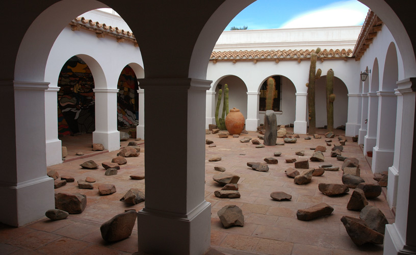

Museos
Salta es una provincia rica en cultura, y sus museos son una ventana a su pasado y su presente.
-

Museo GüemesPleno de estímulos visuales y sonoros, el Museo propone un recorrido por la historia del General Martín Miguel de Güemes y la gesta emancipadora de un modo didáctico, único e innovador. Compuesto por diez salas, cada una despliega un recurso escénico y audiovisual distinto, en busca de mantener la atención de los visitantes de todas las edades. Las técnicas de exhibición incluyen efectos escenográficos, lumínicos, programas multimedia y presentaciones audiovisuales inéditas para los Museos de Salta y la Región, que convertirán a cada visitante en el protagonista de una experiencia sensorial inolvidable.
-

Museo de Arte
Contemporáneo (MAC Salta)El Museo de Arte Contemporáneo de Salta (MAC) abrió sus puertas el día 26 de julio de 2004, con el objetivo de difundir, investigar, educar y exhibir la producción artística contemporánea local, nacional e internacional. Cuenta con una biblioteca, fototeca, videoteca, taller de artes para niños. Difunde el arte contemporáneo, trabaja en la educación, formación de colecciones, bibliotecas y fototecas. Su actividad principal es la organización de muestras que se renuevan mensualmente. El edificio elegido para el funcionamiento del museo, es una construcción de estilo italiano que data del siglo XIX, ubicado en el casco histórico. Con cuatro años de vida el museo ha logrado una fuerte inserción a nivel nacional e internacional gracias al apoyo sostenido de la comunidad que con su participación constante ha colaborado al logro de los principales objetivos.
-

Museo de la Ciudad
"Casa de Hernández"La casa, ubicada a 200 m de la plaza 9 de Julio en Salta, fue atribuida a Juan Hernández y Enríquez, pero en 1789 pertenecía a Petrona Rodríguez Peñalba. Cambió de dueños hasta ser adquirida por la Provincia en los años 70. Restaurada parcialmente desde 1984, conserva su estilo virreinal con doble puerta y balcón en esquina, evidenciando su antiguo uso comercial. Construida en cal, canto y adobe, tenía dos patios, de los cuales queda uno. Sus muros, pisos y techos reflejan técnicas coloniales y altoperuanas. Desde 1980 alberga el Museo de la Ciudad.
-

Museo
Arqueológico de CachiCachi, a 150 km de Salta, es un destino que vale la pena por su riqueza arqueológica y su belleza de montaña. El Museo Arqueológico Pío Pablo Díaz resguarda unas 4.000 piezas de distintas épocas, desde la precerámica hasta la colonial, y protege más de 100 sitios arqueológicos. Además del museo, se pueden realizar excursiones a lugares como Las Pailas y La Paya para ver restos precolombinos. Cachi es también un lugar para reflexionar sobre el pasado, el presente y el futuro.